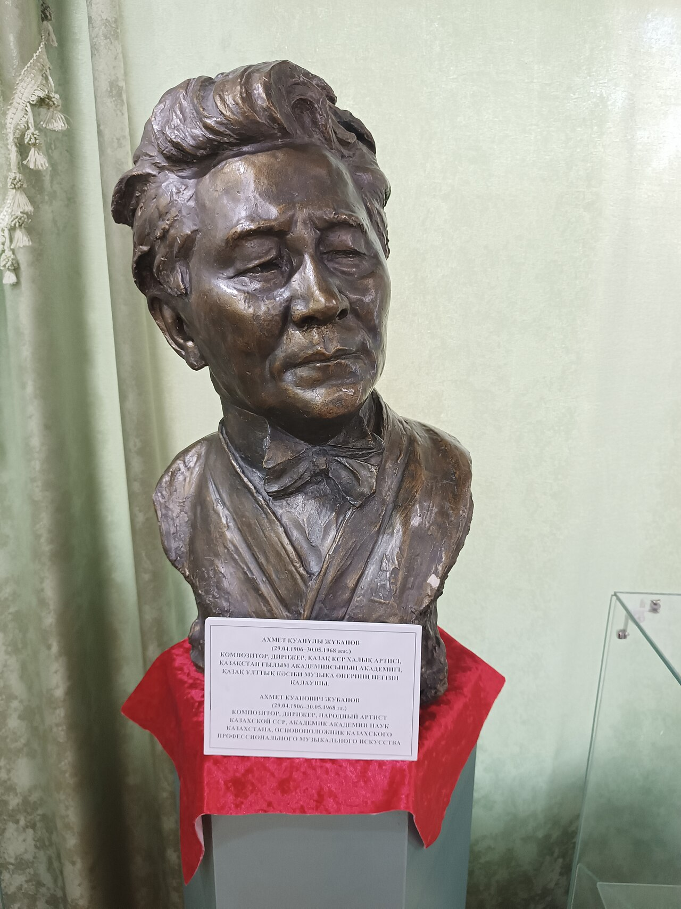
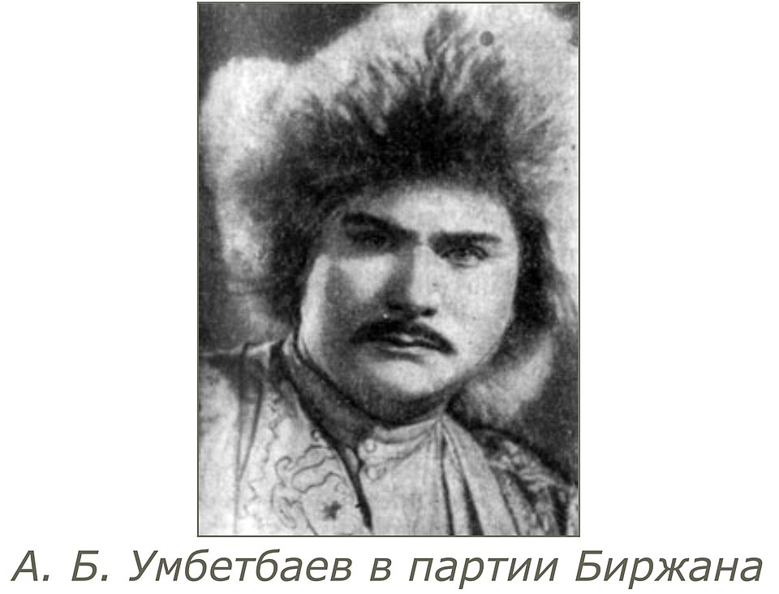

Музыка · 50-бөлім · Қазақ композиторлары Music · Section 50 · Kazakh Classical Composers Музыка · Раздел 50 · Казахские композиторы-классики
XX ғасырда қазақтың КӘСІБИ (классикалық) музыкасы дүниеге келді — халық әуенінің еуропалық пішіндермен (опера, симфония, оркестр) тоғысуы. In the 20th century Kazakh PROFESSIONAL (classical) music was born — a fusion of Kazakh folk melody with European forms (opera, symphony, orchestra). В XX веке родилась казахская ПРОФЕССИОНАЛЬНАЯ (классическая) музыка — соединение казахской народной мелодики с европейскими формами (опера, симфония, оркестр).
XX ғасырда қазақтың КӘСІБИ (классикалық) музыкасы дүниеге келді: ноталы жазу, опера театры, симфониялық оркестр, музыкалық білім. In the 20th century Kazakh PROFESSIONAL (classical) music was born: written notation, an opera house, a symphony orchestra, music education. В XX веке родилась казахская ПРОФЕССИОНАЛЬНАЯ (классическая) музыка: нотная запись, оперный театр, симфонический оркестр, музыкальное образование.
Оның мәні — қазақ халық әуенін (ән, күй) еуропалық пішіндермен (опера, симфония, оркестр) тоғыстыру. Its essence is fusing Kazakh folk melody (song, küi) with European forms (opera, symphony, orchestra). Её суть — соединение казахской народной мелодики (песня, кюй) с европейскими формами (опера, симфония, оркестр).
Негізін қалаған үш есім: Жұбанов, Брусиловский, Төлебаев. Three names laid its foundation: Zhubanov, Brusilovsky, Tulebayev. Её основу заложили три имени: Жубанов, Брусиловский, Тулебаев.
💡 Бұл — халық музыкасы мен еуропалық музыканың тоғысуы: домбыра әуені енді симфониялық оркестр мен опера сахнасында да естіле бастады. 💡 This is where folk music meets European music: the dombra melody began to sound on the symphony stage and in opera too. 💡 Это встреча народной и европейской музыки: домбровая мелодия зазвучала на симфонической сцене и в опере.

Композитор, дирижёр әрі ғалым. Құрманғазы атындағы қазақ халық аспаптары оркестрі мен алғашқы ішекті оркестрді құрды; халық музыкасын жинап, зерттеді. Composer, conductor and scholar. Founded the Kurmangazy Kazakh Folk Instruments Orchestra and the first string orchestra; collected and studied folk music. Композитор, дирижёр и учёный. Основал Казахский оркестр народных инструментов имени Курмангазы и первый струнный оркестр; собирал и изучал народную музыку.
🪕 Құрманғазы оркестрі — оның басты ісі. 🪕 The Kurmangazy Orchestra is his main legacy. 🪕 Оркестр имени Курмангазы — его главное дело.
(1905–1981) Алғашқы қазақ операларын жазды («Қыз-Жібек», «Жалбыр»). Қазақ КСР-інің тұңғыш Гимнінің авторларының бірі. (1905–1981) Created the first Kazakh operas ("Kyz-Zhibek", "Zhalbyr"). One of the authors of the first Anthem of the Kazakh SSR. (1905–1981) Создал первые казахские оперы («Кыз-Жибек», «Жалбыр»). Один из авторов первого Гимна Казахской ССР.
🎭 «Қыз-Жібек» — алғашқы қазақ операсы. 🎭 "Kyz-Zhibek" — the first Kazakh opera. 🎭 «Кыз-Жибек» — первая казахская опера.

«Біржан — Сара» операсының авторы (қазақ операсының шыңы). Қазақ КСР Мемлекеттік Гимнінің музыкасын жазды. Author of the opera "Birzhan and Sara" (the peak of Kazakh opera). Wrote the music of the State Anthem of the Kazakh SSR. Автор оперы «Биржан и Сара» (вершина казахской оперы). Написал музыку Государственного гимна Казахской ССР.
🏛️ Гимн пен «Біржан — Сара» — оның шыңы. 🏛️ The Anthem and "Birzhan–Sara" are his summit. 🏛️ Гимн и «Биржан-Сара» — его вершина.
Ұлттық операNational operaНациональная опера
♪Симфониялық музыкаSymphonic musicСимфоническая музыка
♪Кәсіби оркестрлерProfessional orchestrasПрофессиональные оркестры
♪Музыкалық білімMusic educationМузыкальное образование
♪Олардың еңбегі: Қазақстанда ұлттық опера, симфониялық музыка, кәсіби оркестрлер мен музыкалық білім жүйесін жасады. Their contribution: they created national opera, symphonic music, professional orchestras and music education in Kazakhstan. Их заслуга: они создали национальную оперу, симфоническую музыку, профессиональные оркестры и музыкальное образование в Казахстане.
🎧 батырманы басып, қазақ әуенін тыңдаңыз (пентатоника) tap the button and hear a Kazakh melody (pentatonic) нажмите кнопку и послушайте казахскую мелодию (пентатоника)
📌 Қазақ халық әуенінің негізі — пентатоника (бес дыбысты лад): до-ре-ми-соль-ля. Композиторлар осы әуенді еуропалық пішіндерге кіргізді. 📌 Kazakh folk melody is based on the pentatonic scale (a five-note mode): C-D-E-G-A. The composers brought this melody into European forms. 📌 Основа казахской народной мелодики — пентатоника (пятиступенный лад): до-ре-ми-соль-ля. Композиторы ввели эту мелодику в европейские формы.